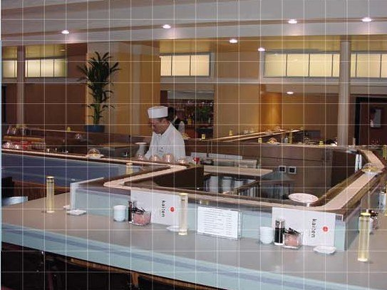

Restauration thématique, conçue sur mesure.
Depuis 2005, Sopacom Concept participe au développement de la restauration thématique. Après une quarantaine de références dans le convoyeur à sushi « Sushi Bar », Sopacom Concept a participé à de nombreux concepts.

Sushi ConceptLe sushi de A à ZConvoyeurs à sushi à palettes ou magnétiques, cuisson, accessoires, agencement, conception et fabrication à Stains.
Découvrir Sushi Concept → Pizza ConceptLa pizza de A à Z
Pizza ConceptLa pizza de A à ZZone cuisine conçue sur mesure : préparation, cuisson et distribution intégrées, pour la régularité des fabrications.
Découvrir Pizza Concept →Sources : plaquettes Sopacom Concept, sites sushiconcept.fr et pizzaconcept.fr, site actuel de Sopacom Industrie.
Détourner la manutention mécanisée, concevoir l’ensemble du lieu.
Un bureau d’étude
Plans d’implantation et de réservations, projet clé en main avec des experts partenaires.
Source : Plaquette « Le SUSHI de A à Z » (PDF Sopacom Concept).
Une usine à Stains (93)
Convoyeurs fabriqués, assemblés et testés à l’usine avant installation par les équipes Sopacom.
Source : Plaquette « Le SUSHI de A à Z » (PDF Sopacom Concept).
Des lieux d’exception
Des solutions pensées pour chaque projet, en lien avec les architectes et designers.
Source : site actuel de Sopacom Industrie.
Sopacom Concept a participé à de nombreux concepts de restauration thématique :
Little Italy · Schwartz’s · OUR · Il Natural · Oggi · Crêpe Story · Pain et le Vin · Olive et Balsamique · Delitaly · Bus Palladium · Paradis du Fruit · ZO · Seine Alliance
Source : page « Sopacom Concept » du site actuel de Sopacom Industrie.